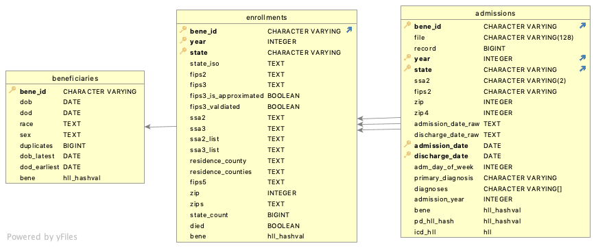

Medicare: Building a Data Warehouse from ResDac Files
Processing pipeline
Medicare Pipeline Steps
Current pipeline consists of 5 steps, each represented as a sub-workflow:
Grant
SELECTprivileges (i.e., read access) to all newly created tables (this step is actually a command line tool, not a workflow)
Ingestion of raw data
Ingestion of raw data is incremental, i.e. tables that are already in the database will not be dropped (deleted). However, any table with the name found in input path will be replaced. Please note, that every raw record is identified by the tuple consisting of the original file name and the line number in that file.
Note
If no raw data is given or --input parameters points
to a non-existent or empty directory, the pipeline will skip ingestion
step and will process the raw data that is already in the database.
Ingestion as a part of the data pipeline is only implemented for data in the format as it comes from ResDac. Metadata for ingestion is taken from FTS files that accompany ResDac deliverables.
Important
In case of Medicare data in posession of NSAPH organization, we only have original ResDac data for years 2011-2014 and 2016-2018. Therefore, the pipeline is unable to ingest the data for other years (1999-2010 and 2015).
See Files for 1999 to 2010 for more information.
See Ingesting Raw Files for processing details
Processing Data in the Database
During in-database processing all tables, views and materialized views are completely replaced. Old tables are dropped and new ones are created from scratch.
See Combining raw files into a single view for processing details.
Medicare Pipeline References
See Medicare data ingestion and processing pipeline for the pipeline code
See Medicare data model definition for formal data model definition.
Ingesting Raw Files
Overview of Ingesting Raw Medicare Files
There are two types of tables:
Patient summary, aka enrollment, aka denominator
Inpatient admissions
Unfortunately, the structure of medicare files is different for almost every year.
Summary files for some years come in pairs:
mbsf_ab_summarymbsf_d_cmpnts
For other years we have a single file:
mbsf_abcd_summary
Inpatient admissions files always follow medpar_all_file pattern.
Columns vary from year to year even for similarly named files, new columns are being added and column names are sometimes changed.
To add insult to injury, for years prior to 2011 (1999-2010) we do not have original files, but preprocessed files with patient summary (called denominators) and admissions. They are in SAS 7BDAT format, however columns are also different for different years. Please refer to Files for 1999 to 2010 section for details.
Storing raw data in the Database
Given the difference in file structures we create a separate table for every file. However, to make it easier to join these tables we:
Add a column containing original file name to every table
Add generated columns with uniform names for:
Year
State
Bene_Id
Zip code
Originally, these data is stored in columns with the following possible names:
"bene_id": (None, ["bene_id", "intbid", "qid", "bid_5333*"]),
"state": (None, ["state", "ssa_state", "state_code",
"bene_rsdnc_ssa_state_cd", "state_cd",
"medpar_bene_rsdnc_ssa_state_cd"]),
"zip": (None, ["zip", "zipcode", "bene_zip_cd", "bene_zip",
"bene_mlg_cntct_zip_cd",
"medpar_bene_mlg_cntct_zip_cd"]),
"year": (None, ["year", "enrolyr", "bene_enrollmt_ref_yr",
"rfrnc_yr"])
When a table has no natural primary key (admission tables) we add a record number column. This column ha sno meaning but allows to trace a record to the original data.
Files for 1999 to 2010
Between 1999 and 2010, original Medicare ResDAC raw datasets are not available to NSAPH. Instead, only partially preprocessed files provided by external collaborators are available. These have been stored historically on RCE in two separate directories:
denominator/
inpatient/
Each directory contains one file per year. These files use the SAS7BDAT format, which is a binary data format native to SAS analytics software. Each file embeds metadata about its schema (i.e., field names, types, order), but column names and formats still vary from year to year.
To handle this variation:
Each file is individually introspected using the SAS Introspector.
A YAML schema is automatically generated and stored in a central registry.
This schema is then used to create the appropriate database table for ingestion.
For more details on implementation:
See the SAS Inrospector for how metadata is extracted.
See the class SAS Data Laoder for how these files are ingested into the database.
Because of schema variability:
Special heuristics are used to detect core fields like beneficiary ID ( bene_id), year, zip code, and state code, based on a list of possible alternative names.
Missing expected columns (e.g., year) are sometimes generated using information inferred from directory or file naming.
Each resulting table includes:
A standardized structure with additional generated columns (e.g., record ID, file name).
Uniform field naming conventions to support unioning across years.
Consistent indexing to support later join operations with downstream tables (e.g., beneficiaries and admissions).
⚠ Note: Because of the variability and limited provenance of these files, this step is distinct from the ResDAC ingestion workflow and is not based on FTS metadata.
📚 Related References:
:doc: members/mcr_sas2yaml for introspection logic :doc: members/mcr_sas2db for database file loading
graph TD;
A[SAS 7BDAT File] --> B[Inspect schema using SAS Introspector]
B --> C[Generate YAML metadata]
C --> D[Update main metadata registry: used for combining tables for all years]
C --> L[Generate DDL]
C --> E[Configure SAS Data Loader]
E --> F[Create SQL table]
L --> F
F --> I[Ingest data]
A --> I
I --> G[Add synthetic keys and indexes]
Files for Years 2011 and later
Metadata Extraction
These files are original files from ResDac. They come in Fixed Width Format (FWF) typically using the .dat extension. Each data file delivered by ResDAC is accompanied by a plain-text metadata file known as a File Transfer Summary (FTS), which describes the structure of the corresponding data file—including:
Column names
Data types (e.g., NUM, CHAR, DATE)
Column widths and formats
Record and file length metadata
These FTS files are designed primarily for human readability and are not machine-friendly. To address this, the Dorieh includes a partial FTS parser:
This parser performs the following:
Extracts structured metadata directly from .fts files
Converts it to a standardized YAML-based data model.
The YaML model describes table and column definitions.
The YaML model includes types, column widths, descriptions, and indexing hints
Supports both Medicare and Medicaid FTS formats
Once the YAML schema is generated, it is used for:
Generating SQL DDL scripts to create staging tables
Feeding column layout metadata to the FWF reader (FWFReader)
Automatically identifying and indexing key fields such as:
BENE_ID (Beneficiary ID)
YEAR
STATE
ZIP
Supported File Types
The parser supports:
Medicare files: identified based on prefixes like mbsf_abcd_XXXX.fts
Medicaid files: using filenames like maxdata_ps_STATE_YEAR.fts
Ingestion process
Once metadata extraction is complete, raw data ingestion takes place using:
MedicareDataLoader to parse FWF records row-by-row
MedicareLoader to coordinate:
FTS parsing
Schema registration
Loader selection (DAT or CSV)
Data loading, indexing, and optimization (VACUUM)
The MedicareLoader module orchestrates the end-to-end process, including:
Scanning input directories recursively for *.fts files
Parsing each FTS file to generate a schema
Locating the corresponding *.dat (or *.csv.gz) files
Triggering the appropriate file loader
Writing data to the database
graph TD;
A[SAS FTS file] --> B[YAML schema via fts2yaml]
B --> C[Extract layout for fixed-width reader]
B --> E[Generate DDL]
S[SAS DAT FILE] --> D
C --> D[Run MedicareLoader calling MedicareDataLoader]
E --> D
D --> F[Load data to SQL table]
F --> G[Apply indexing and VACUUM]
Directory Layout Expectation
To function correctly with the NSAPH ingestion pipeline, the directory layout for ResDAC raw files must follow this structure:
project_root/
└── medicare/
└── 2018/
├── mbsf_abcd_2018.fts
├── mbsf_abcd_2018.dat
└── medpar_2018.fts
Specifically:
Each year must have its own directory
Table names are inferred from FTS file name and containing year
The FTS filename must match the .dat or .csv.gz data file (just differing in extension)
💡 For a full example of metadata schema outputs, see:
Combining raw files into a single view
Eventual database schema
Once all raw files are ingested into the database they are combined into two views:
Patient summary (aka MBSF, aka Beneficiary summary)
Inpatient Admissions (aka hospitalizations, aka medpar)
The figure below visualizes the database schema.
{kind=link}
The tables above are defined in Medicare data model definition. This file uses Extensions used for creating federated view of different years.
CWL workflows
The full pipeline consists of two steps:
Creating Federated Patient Summary
The federated patient summary view is created in two steps, though the division into steps is purely technical. The reasons are given some limitations of readability in SQL.
This step uses data modelling extensions described in Extensions used for creating federated view of different years.
These steps are part of Medicare Beneficiaries data in-database processing pipeline
First step: Initial in-database data conditioning
The first step creates a view called medicare.ps.
This step technically combines all cms.mbsf_ab* and cms.mcr_bene_*
tables into a single view using CREATE VIEW SQL statement.
It also cleanses and conditions data from the following columns:
yearIf it is a string in original file, it is converted to integer
If it is two-digit, it is converted to 4 digit
dob: converted to SQLDATEtype, from either character or SAS numeric formdod(date of death): converted to SQLDATEtype, from either character or SAS numeric formageas recorded in the raw data. It is the beneficiary’s age on the last day of the prior yearsexracerti_raceResearch Triangle Institute race codehmo_indicatorsMonthly Medicare Advantage (MA) enrollment indicatorhmo_cvg_countNumber of months the beneficiary was enrolledyobyear of birth calculated with the age variable (year - age)state: added a column with text state idssa2: Social Security Administration (SSA) two digit code for statessa3: Social Security Administration (SSA) three digit code for countyfips2: added a column with two digit state FIPS codezip: if original file uses 9-digit zip code, it is split into two separate columns, 5 digitzipand 4-digitzip4. The value is also converted to integer value.zip4: added, when available - the last four digits of 9-digit zip code
The following CWL tool is responsible to perform it.
Second step: Mapping to county FIPS codes
At the second step, a view called medicare._ps is created.
The only difference between medicare.ps and medicare._ps
is that the latter has county FIPS code (fips3 column)
inferred either SSA county code (ssa3 column), if it is
available or from the zip code (zip column)
if SSA county code is absent. The reason this has to happen
in a separate second step is that both ssa3 and zip are
being cleansed in the first step.
The second step is performed by a general loader utility based on the Medicare data model definition.
Creating Beneficiaries table
This is also part of Medicare Beneficiaries data in-database processing pipeline
See also creating Medicaid Beneficiaries table
This is also a two steps operation. The first step creates an SQL view and the second step stores the data as a real table.
Essentially it is a medicare.ps view grouped by beneficiary id
(bene_id column). This step also takes care of documenting any
discrepancies in the data related to:
dob
dod
race
race_rti
sex
If there is any discrepancy for a given bene_id, then:
The earliest DOB is selected as
dobThe latest DOD (date of death) is selected as
dodA comma-separated string containing all race codes is used for
raceA comma-separated string containing all race codes is used for
race_rticomma-separated string containing all sex codes is used for
sex
The following columns are added:
duplciates: a numeric column showing the number of inconsistent values for this beneficiary. If it is greater than 1, it means there is a discrepancy in the data for this beneficiarydob_latest: the latest DOB found in the records for this beneficiary. The value of this column is NULL for consistent recordsdod_earliest: the earliest DOD found in the records for this beneficiary. The value of this column is NULL for consistent recordsBeneficiary id HLL hash (
benecolumn), to be used forapproximate count distinctqueries. See more
This topic is discussed in more details in the Medicaid documentation
Creating Enrollments table
This is also part of Medicare Beneficiaries data in-database processing pipeline
Enrollments overview
Enrollments table contains information about yearly beneficiaries enrollments in different states and tracks changes in eligibility (i.e. beginning of the eligibility and beneficiaries death) and changes in states and addresses.
See also Medicaid Enrollments and Medicaid Eligibility tables. Please note, that since Medicare eligibility is not as volatile as Medicaid eligibility, i.e. it does not usually change month to month, there is no direct analog to Medicaid Eligibility table.
As most of the other tables, Enrollments table is created in two steps. The first step creates an SQL view and the second step stores the data as a real table, adds primary key and builds indices to make queries more efficient.
Enrollments Primary key (unique identifier)
bene_id
year
state
In other words, a record in the table describes a given beneficiary leaving in a given state during a given year. If beneficiary has moved from one state to another during the year, more than one record for such a beneficiary will be created in the table. This is consistent with Medicaid Enrollments, though, arguably, makes less sense for Medicare.
Enrollments data cleansing
Beneficiaries can move during a year therefore address columns can have multiple values. These columns are:
fips2: state FIPS codefips3: county FIPS codessa2: SSA state codessa3: SSA county codezip: beneficiary address zip code
The policy for all of this columns is the following:
For corresponding column in the enrollments table, an arbitrary but deterministic value is selected
An additional column is added, containing the list of all encountered values
The additional columns are:
ssa2_listssa3_listresidence_countieszips
Additional columns reflecting data quality and cleansing are added to the Enrollments tables:
state_count: Number of states associated with the given beneficiary in a given yearfips3_is_approximated: A boolean column, indicating whether the value was taken from original record as is or approximated. If true, it means that there was no valid county code in the original ResDac record, hence, the county code was inferred from other data (in most cases, zip code)fips3_valdiated: A boolean column indicating that the value of county code is consistent with the values of state code and zip code.
Enrollments columns definitions
The following columns are created for Enrollments:
ssa2: SSA state codessa3: SSA county codessa2_list: list of all SSA county codesstate_iso: ISO code of the state, used for mappingresidence_county: one of the “latest” residence counties where the beneficiary was registered, latest in alphabetical orderresidence_counties: comma separated list of all “latest” residence counties, where a beneficiary was registered during the yearfips5: 5 digit FIPS code of theresidence_countyzip: one of the “latest” zip codes where the beneficiary was registered, latest in numerical orderzips: comma separated list of all “latest” zip codes, where a beneficiary was registered during the yearstate_count: number of states, where the beneficiary was enrolled in medicaid during the year. Note, this is also the number of records for this beneficiary and this year in the Enrollments` table.died: a boolean flag indicating that the beneficiary has died during this year while being registered for medicaid in this state.hmo_indicators: the maximum value of all the monthly hmo indicatorshmo_cvg_count: the number of months the beneficiary was enrolled in a Medicare Advantage (MA)fips3_is_approximated: A boolean column, indicating whether the value was taken from original record as is or approximated. If true, it means that there was no valid county code in the original ResDac record, hence, the county code was inferred from other data (in most cases, zip code)fips3_valdiated: A boolean column indicating that the value of county code is consistent with the values of state code and zip code.Beneficiary id HLL hash (
benecolumn), to be used forapproximate count distinctqueries. See more
Creating Federated Admissions view
This step is part of Process Medicare inpatient admissions data inside the database
This step technically combines all cms.medpar* and cms.mcr_ip_*
tables into a single view using CREATE VIEW SQL statement.
It also cleanses and conditions data from the following columns:
yearIf it is a string in original file, it is converted to integer
If it is two-digit, it is converted to 4 digit
state: added a column with text state idfips2: added a column with two digit state FIPS codezip: if original file uses 9-digit zip code, it is split into two separate columns, 5 digitzipand 4-digitzip4. The value is also converted to integer value.zip4: added, when available - the last four digits of 9-digit zip codeadmission_date: converted to SQLDATEtype, from either character or SAS numeric formdischarge_date: converted to SQLDATEtype, from either character or SAS numeric formadm_day_of_week: converted tointegerDiagnoses: separate columns combined into a single
ARRAYcolumn (read more about PostgreSQL Arrays)
Creating Inpatient Admissions table
This step is also part of Process Medicare inpatient admissions data inside the database
Table with all inpatient admissions billed to Medicare with admission and discharge dates and ICD codes.
During this step the following major operations are performed:
Added the following columns:
Admission year, extracted from admission date
Added HLL hashes for:
Beneficiary id (
benecolumn)Primary diagnosis at admission (
pd_hll_hash)All diagnoses, used for admission (
icd_hll)
Performed validation of admission data. Records that failed validation are excluded from the resulting
Admissionstable but are stored in a specialmedicare_audit.admissionstable, together with the reason for validation failure. We distinguish three reasons for validation failure:Primary key: this indicates missing data, for example:Missing beneficiary id
Missing admission or discharge date
Missing US State, where the admission happened
Foreign key: means that the beneficiary referred in the admission record was not eligible for Medicare in the given yearDuplicate: a duplicate record was found. Only one record out of several duplicates is stored in theadmissionstable, others are copied tomedicare_audit.admissionstable.
See more information about handling records that have failed validation in: Data Modeling
Creating QC Tables
Medicare QC approach
QC tables (materialized views to be precise) are created by Medicare QC Pipeline
Two tables are created:
Enrollments QC
Admissions QC
These are aggregate tables, defined in Medicare data model definition (qc_enrollments and qc_admissions).
In these tables we define dimensions and measures, including count measures and percent measures.
Enrollments QC Table
Enrollments QC Table Definition
Enrollment QC is roughly defined by the following SQL:
SELECT
year,
state,
zip,
fips3,
CASE
WHEN (
beneficiaries.dob IS NULL)
THEN 'MISSING'::TEXT
WHEN (
beneficiaries.dob_latest IS NOT NULL)
THEN 'AMBIGUOUS':: TEXT
ELSE 'CONSISTENT'::TEXT
END AS consistent_dob,
CASE
WHEN (
beneficiaries.dod IS NULL)
THEN 'NONE'::TEXT
WHEN (
beneficiaries.dod_earliest IS NOT NULL)
THEN 'AMBIGUOUS':: TEXT
ELSE 'CONSISTENT'::TEXT
END AS consistent_dod,
CASE
WHEN (
beneficiaries.sex ~~ '%,%'::TEXT)
THEN 'AMBIGUOUS':: TEXT
ELSE 'CONSISTENT'::TEXT
END AS consistent_sex,
CASE
WHEN (
beneficiaries.race ~~ '%,%'::TEXT)
THEN 'AMBIGUOUS':: TEXT
ELSE 'CONSISTENT'::TEXT
END AS consistent_race
fips3_is_approximated,
fips3_valdiated,
state_iso,
COUNT(*) AS numrecords,
((# hll_add_agg(bene)))::bigint AS numdistinctbeneficaries,
hll_add_agg(bene) AS bene_hll
FROM
medicare.enrollments natural join medicare.beneficiaries
GROUP BY
year,
state,
zip,
fips3,
consistent_dob,
consistent_dod,
consistent_sex,
consistent_race,
fips3_is_approximated,
fips3_valdiated;
Enrollments QC Table Dimensions
Therefore, the following QC dimensions are defined:
year,
state,
zip,
fips3,
consistent_dob,
consistent_dod,
consistent_sex,
consistent_race,
fips3_is_approximated,
fips3_valdiated
Enrollments QC Table Measures
In Apache Superset, the following metrics are defined for this table:
Number of consistent beneficiaries:
(#(hll_union_agg(bene_hll) FILTER ( WHERE consistent_dob = 'CONSISTENT' AND consistent_dod <> 'AMBIGUOUS' AND consistent_race = 'CONSISTENT' AND consistent_sex = 'CONSISTENT' )) ) * 100.0 / (#(hll_union_agg(bene_hll)))
Number of distinct beneficiaries
(#(hll_union_agg(bene_hll)))::INT
Number of enrollment records
SUM(numrecords)
Admissions QC Table
Admissions QC Table Definition
Enrollment QC is roughly defined by the following SQL:
SELECT
year,
state,
zip,
reason,
state_iso,
COUNT(*) AS numrecords,
((# hll_add_agg(bene)))::bigint AS numdistinctbeneficaries,
hll_add_agg(bene) AS bene_hll
FROM
medicare.admissions UNION ALL medicare_audit.admissions
GROUP BY
year,
state,
zip,
reason;
Admissions QC Table Dimensions
Therefore, the following QC dimensions are defined:
year,
state,
zip,
reason (reason is either literal ‘OK’ or a reason why a record failed validation)
Admissions QC Table Measures
In Apache Superset, the following metrics are defined for this table:
Count metrics:
Number of admission records
SUM(numrecords)
Number of distinct beneficiaries
(#(hll_union_agg(bene_hll)))::INT
Percent metrics:
Percent of valid records (passed validation)
(SUM(numrecords) FILTER (WHERE reason = 'OK'))*100.0/SUM(numrecords)
Percent of admission records, for which corresponding enrollment data was not found (failed validation)
(SUM(numrecords) FILTER (WHERE reason = 'FOREIGN KEY'))*100.0/SUM(numrecords)
Percent of duplicate records (failed validation, one apparent admission recorded more than once)
(SUM(numrecords) FILTER (WHERE reason = 'DUPLICATE'))*100.0/SUM(numrecords)
Percent of valid records with missing data (failed validation)
(SUM(numrecords) FILTER (WHERE reason = 'PRIMARY KEY'))*100.0/SUM(numrecords)